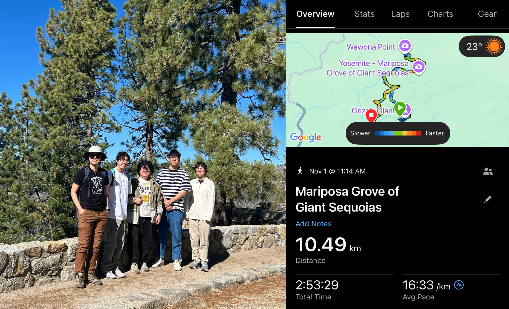

Miscellaneous
The Name of Yucca
The name “Yucca” was suggested by our friend Katie Mao.
Yucca refers to a diverse group of plants native to the Americas, known for their tough, sword-like leaves and tall clusters of white or cream-colored flowers. These resilient plants thrive in environments ranging from arid deserts to open grasslands. You can spot yucca in places like Joshua Tree National Park (where Joshua Trees are actually a type of yucca!), White Sands National Park, and even—surprisingly—at your local grocery store!

Outdoor Spirit
Our lab loves the outdoors! Xiaofan is organizing the EE hiking trips every semester.
Recent Hikes
Fall 2025: Mariposa Grove of Giant Sequoias Trail
A beautiful hike through ancient giant sequoias in Yosemite National Park.
